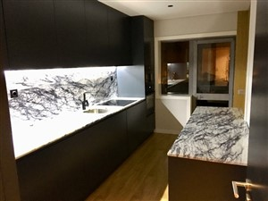
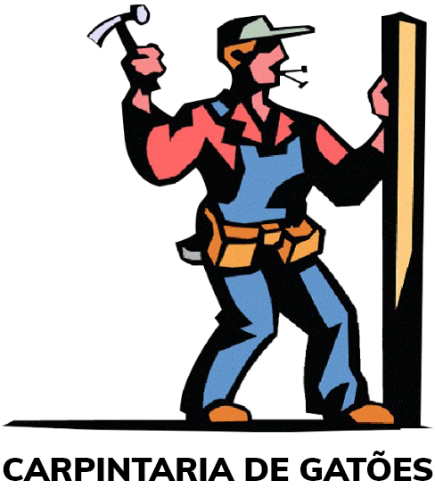
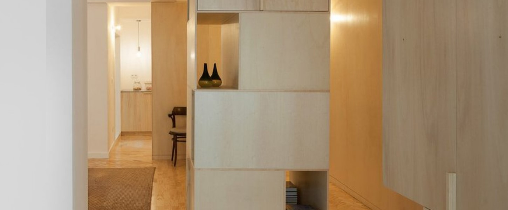
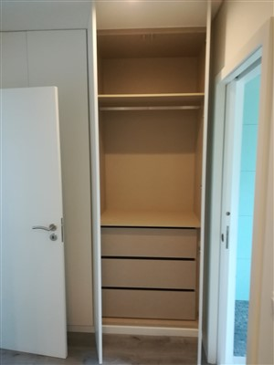
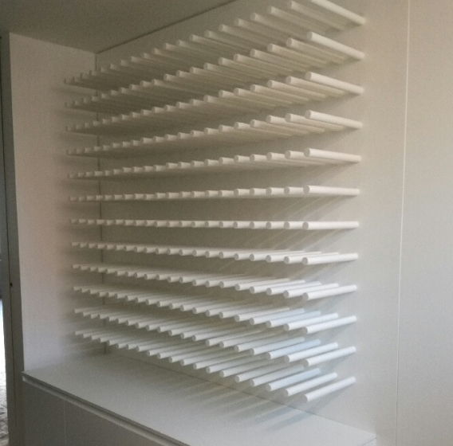

01 · Cozinhas
Organizar o dia a dia.
Uma cozinha começa pela forma como usa o espaço: cozinhar, guardar e circular.
Explorar cozinhas
CarpintariaCarpintaria & mobiliário por medida
Cozinhas, roupeiros e trabalhos de carpintaria pensados para o espaço que tem.
Explorar o meu projeto De Custóias, desde 1987.
Do espaço à peça
Mobiliário por medida e carpintaria de construção. Aqui, o ponto de partida é o espaço que quer trabalhar.

Uma cozinha começa pela forma como usa o espaço: cozinhar, guardar e circular.
Explorar cozinhas
O que pretende guardar e as medidas disponíveis ajudam a iniciar a conversa.
Explorar roupeirosPortas, pavimentos, escadas, móveis de casa de banho e peças por medida fazem parte das áreas apresentadas pela carpintaria.
Contar a minha ideiaO seu ponto de partida
Experimente reunir as primeiras informações. Não precisa de ter todas as decisões tomadas.
Demonstração interativa. Sem dados pessoais, envio ou pedido de orçamento.

Carpintaria de Gatões
Uma empresa familiar fundada em 1987, em Custóias. O portefólio reúne mobiliário e carpintaria de construção, das cozinhas às escadas e aos pavimentos.
Ver o resultado é um começo. Conhecer as opções e conversar sobre o espaço é o passo seguinte.
Conhecer o website oficialUma proposta para a Carpintaria de Gatões · Ricardo Almeida
O website já apresenta a história, as áreas de carpintaria e uma galeria por categorias. Esta proposta aproveita essa base e aproxima os exemplos do primeiro contacto.
As categorias atuais são amplas: Mobiliário, Construção e Outros. Aqui, cada exemplo conduz ao tipo de trabalho que o visitante procura, com uma pergunta concreta para começar.
A escolha do espaço, a fase do projeto e a primeira prioridade ficam juntas num resumo. Numa versão final, esse contexto poderia acompanhar o pedido, depois de validarmos os campos convosco.
Proponho filmar a equipa a executar um trabalho escolhido convosco: a preparação, os ajustes e o acabamento. O filme ficaria junto das imagens desse projeto, para mostrar o cuidado que existe entre a ideia e a peça pronta.
Na Canvas, fiz a filmagem, a edição e a integração do filme no website. O filme permite ver o trabalho da oficina e os acabamentos, junto da apresentação da empresa.
Ver o projeto CanvasSou o Ricardo. Produzo filmes e desenvolvo websites. Esta demonstração torna a ideia concreta; os conteúdos finais e o âmbito do trabalho seriam definidos convosco.
Contacto oficial da carpintaria
Travessa Gatões, SN, Armazém A
4460-886 Custóias, Matosinhos
Estes links contactam a empresa real. A demonstração acima não envia informações.